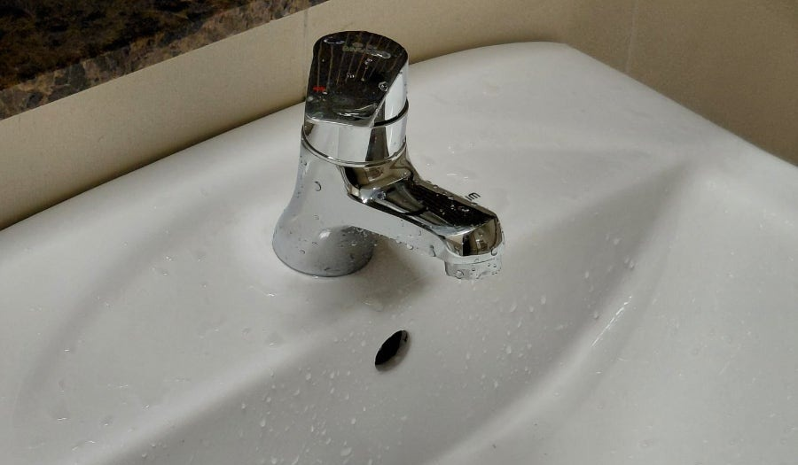
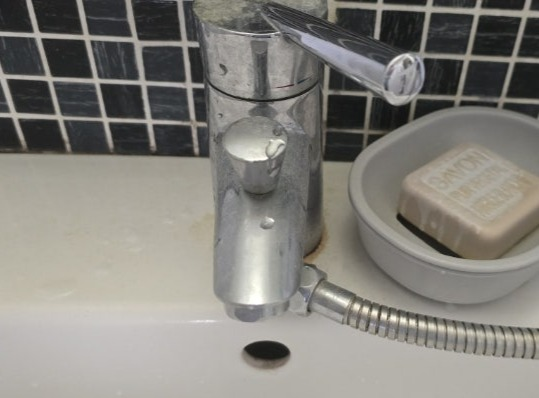

청년배관
밸브를 잘못 돌리면 벽 안쪽 수도밸브가 망가집니다.
그때는 벽을 깨는 공사가 됩니다.
샤워기나 욕실 수전은 벽 안쪽 배관에 연결된 밸브에 물려 있습니다.
겉에서 보이는 것만 돌리면 될 것 같지만, 오래된 집일수록 안쪽이 굳어 있어
힘을 주면 벽 안의 밸브가 부러집니다.
그러면 수전 교체가 아니라 벽을 깨고 배관을 손보는 공사가 됩니다.
비용도 시간도 완전히 달라집니다. 벽에 붙은 것은 손대기 전에 연락 주세요.
 작업 전
작업 전

작업 후
작업 전 작업 후
작업 후